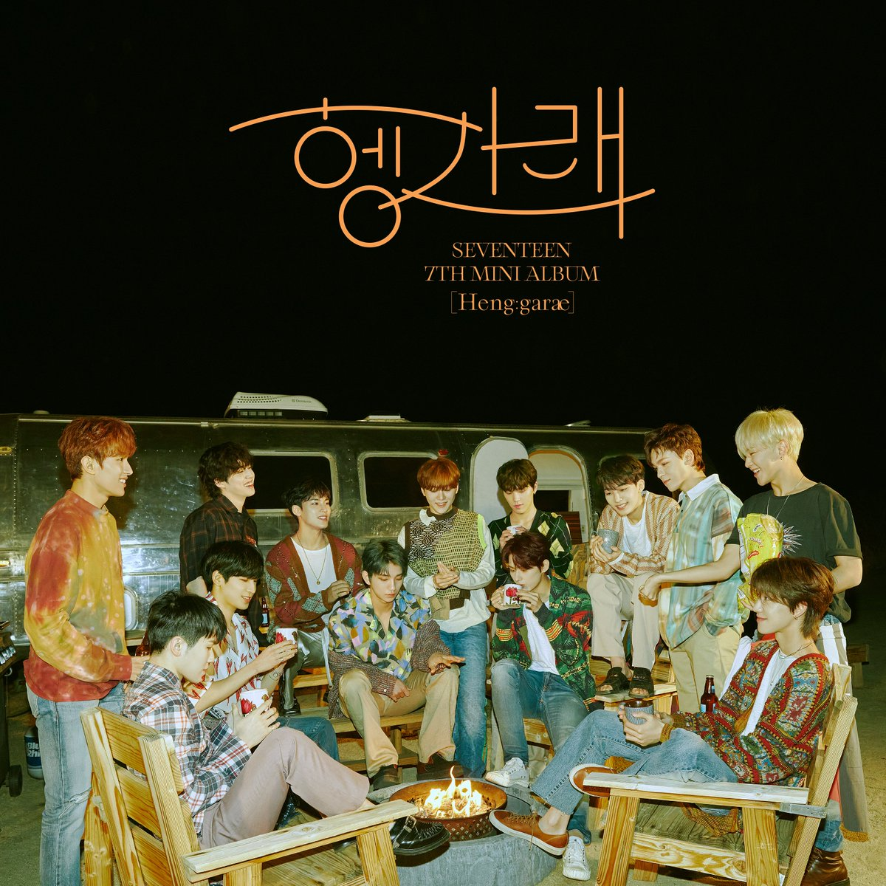
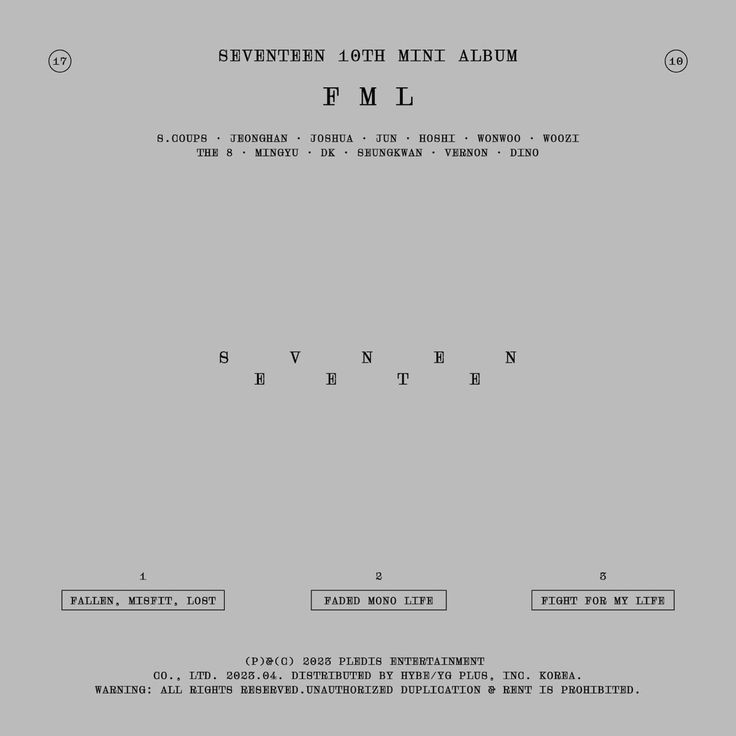

SEVENTEEN (세븐틴) is a self-produced boy group that consists of 13 members
they are known for their impressive performances, diverse music, and charming personalities.
They have garnered a large following worldwide.
The group debuted on May 26, 2015, with the mini album “17 Carat” under PLEDIS Entertainment (PLSDIE)




